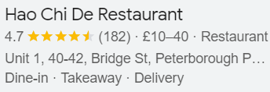

Welcome!
We are delighted to have you here.
Hao Chi De, located in the heart of Peterborough, offers the greatest Chinese food, intriguing specialties, and a unique environment.
Fresh vegetables, seafood, and premium meats are served straight from the market. Our food, drinks and ambiance make for a really pleasurable experience.
Hao Chi De is a family-run restaurant/bar that was founded in 1960 and has always taken pleasure in providing excellent, genuine Chinese cuisine.
We offer speedy delivery so you can enjoy authentic Chinese cuisine in the comfort of your own home. We provide the same great food that is served in the restaurant/bar for takeout.
We invite you to come and experience a restaurant/bar that is truly a cut above the rest.
